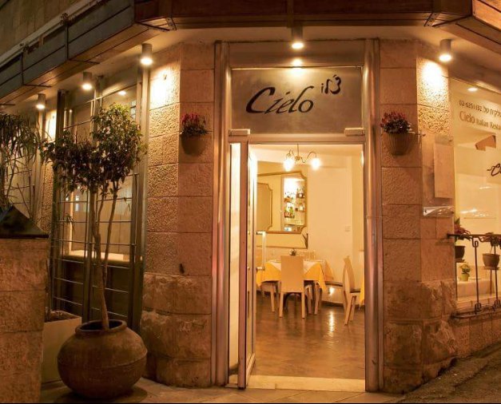
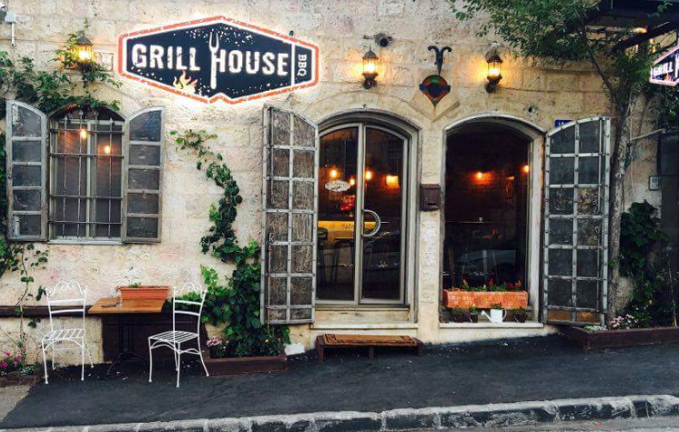
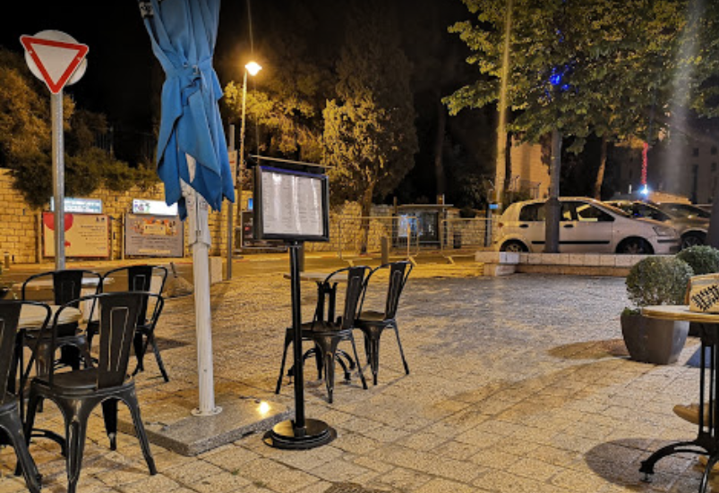
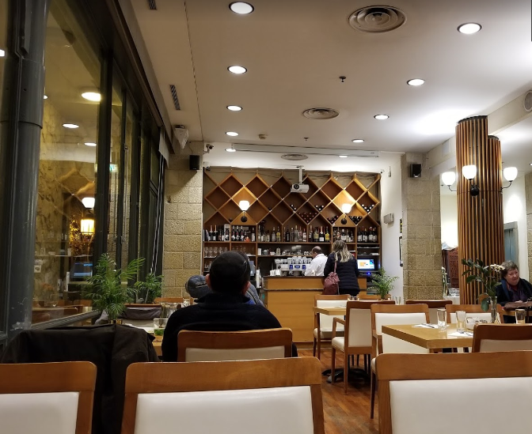
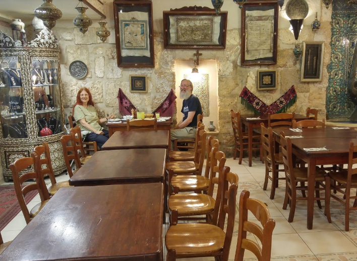
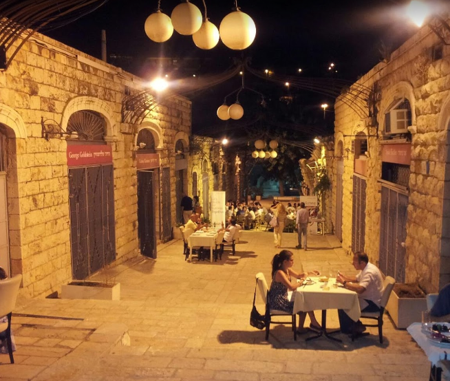
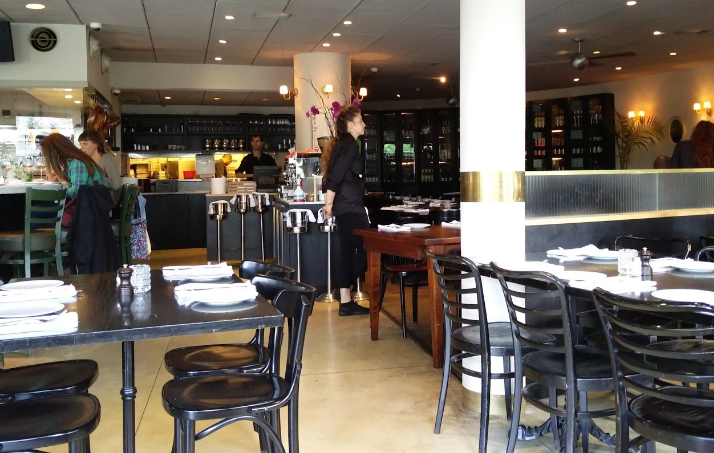

Illustrations of Jerusalem restaurants
""Askadinya Restaurant""

جميع الايام 12م–12ص +972 2-532-4590 Q6VH+63 القدس
Shimon Ha-Tzadik 21, Jerusalem Shimon Ha-Tzadik 21, ירושלים
""cielo restaurant""
جميع الايام 1–4م 6:30–11م +972 2-625-1132 Q6HC+HP القدس، فلسطين
بن سيره 18، القدس، 9418113، إسرائيل בן סירא 18, ירושלים, 9418113
""Grill House""
9:30ص–11:30م Q6VH+76 القدس
ירושלים القدس
""JLM Local Sushi""
جميع الايام 1–11م +972 2-622-2312 Q6GC+MV القدس، فلسطين
דוד המלך 10, ירושלים داوود الملك 10، القدس، فلسطين
""Montefiore Restaurant""
8ص–11م +972 2-623-2928
Q6CF+HR القدس، فلسطين משכנות שאננים, הצייר יעקב שטיינהרט 3, Jerusalem
""Ishtabach""

+972 2-623-2997 Q6P6+4M القدس،فلسطين
השקמה פינת בית יעקב 1, ירושלים השקמה פינת בית יעקב 1 Jerusalem, إسرائيل
""Armenian Tavern""
+972 2-627-3854
Armenian Patriarchate St. 79, Jerusalem ,12–10م,
""The Eucalyptus""
+972 2-624-4331 Q6FG+VQ القدس 5–11م
סמטת פלט 14, Jerusalem סמטת פלט 14, ירושלים
""Chakra""
6م–12ص +972 2-625-2733 Q6H8+8F القدس، فلسطين
الملك جورج 41، القدس، 9426116، فلسطين המלך ג'ורג' 41, ירושלים, 9426116